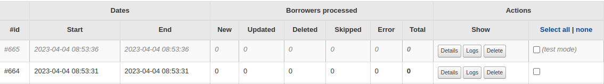

Logs
Runs
Les “Runs” enregistrent des informations variées (dépend des options passées au script), et pour identifier les “runs” lancés en test avec l’option --dry-run, un style visuel spécifique est ajouté.
 Sur chaque détail d’un “run”, vous verrez les adhérents traités par le plugin avec des informations sur le traitement effectués (création, mise à jour ou suppression par exemple) ainsi que la date de cette action.
Historique des adhérents
Options de débug
Vous pouvez passer quelques options au script pour avoir plus d’informations sur l’import:
--info-logs
Log concernant les correspondances ou d’autres informations relatives à chaque adhérents (compatible avec --dry-run )
--success-log
Log toutes les actions réussies en base pour chaque adhérent (aucun effet avec l’option --dry-run)
--debug
Ecriture sur la sortie standard côté serveur, Raw data représente l’adhérent construit depuis la source et Patron for Koha représente l’adhérent tel qui sera enregistré en base